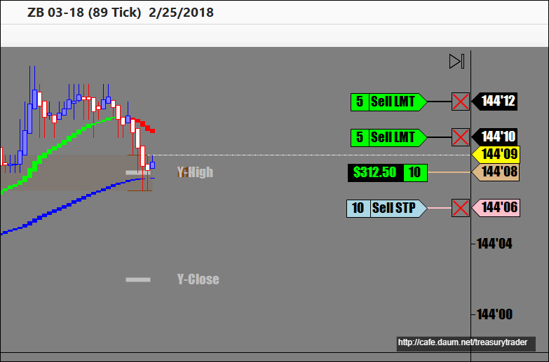
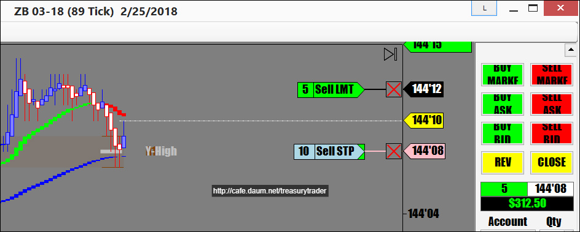
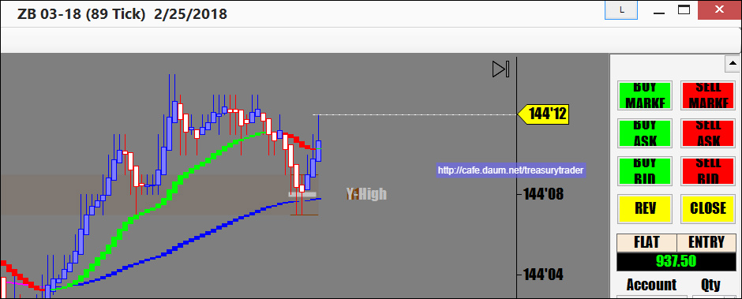

오후3시 장외마켓 오픈하고 기다리는데 별로 움직임이 없고..
기준선 (89일선)을 상향 돌파 한 후 풀백해서 어제 고점과 기준선이 만나는 지점에서 지지받길래 진입
ZB는 일차목표 2틱, 절반은 4틱 목표

1차 목표 달성
손절 앞으로 이동. 매수가에

2차 목표달성..

오늘 저녁 수익은 $937.50
장외마켓인데다가 일요일밤이라 거래가 거의 없어
이거 먹는데 두시간 걸림.
NBC에서 평창 올림픽 폐막식 녹화중계 해주는거 보면서 기다렸음..
자랑스런 대한민국..참 잘했습니다.
손절이 명확히 존재하는 기법인데도 손해보는 날이 거의 없으시네요. 부럽습니다.
답글 | 신고
DarkTemplar 18.02.27. 00:10
추세방향으로 진행하다 조정받고 눌렸다가 다시 반등하는거 보고 들어가는 기법을 주로 씁니다만
첫번째 수익목표가가 굉장히 적지요. ZB같은 경우 2틱입니다.
적게먹고 나오는 매매기법인지라 1차 수익목표 2 포인트는 성공률이 80퍼센트가 넘지만
두번째 수익포인트는 성공확률이 60%도 안됩니다.
자주 걸리지요
제 매매법칙으로 인해 일차수익나면 곧바로 수익을 지키니까 손실이 별로 없는겁니다